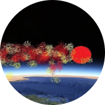

Fetonte il Distruttore · Presentazione di prova
Le catastrofi dell’Età del Bronzo
Un viaggio tra testi antichi, archeologia e ipotesi ancora aperte.
La domanda
Un solo evento o catastrofi differenti?
Il racconto del Diluvio di Sisuda nella Kolbrin ci invita a confrontare tradizioni e testimonianze materiali, senza dare per dimostrata la loro identità.
Kolbrin, Book of Gleanings, cap. 4 — The Deluge
La Kolbrin · Il Diluvio
«Là, su una grande nube nera e turbinante, giunse il Distruttore.»
Kolbrin, Book of Gleanings, cap. 4, «The Deluge», p. 36 del PDF · traduzione italiana del progetto
Testo originale inglese
Testo originale inglese
Non è una testimonianza storica dell'evento
Cronologia orientativa
Quattro momenti da distinguere
2900 a.C.
Diluvio di Ziusudra: datazione di lavoro del progetto2350 a.C.
Depositi studiati da Courty: cronologia proposta2200 a.C.
Crisi climatica del 4,2 ka, circa2100 a.C.
Ipotesi del passaggio di FetonteLa ricerca continua
Le coincidenze sono domande, non ancora risposte.
Confrontiamo fonti, cronologie e geografia per capire quali eventi possano essere collegati e quali debbano restare distinti.
fetonte.it · Presentazione sperimentale